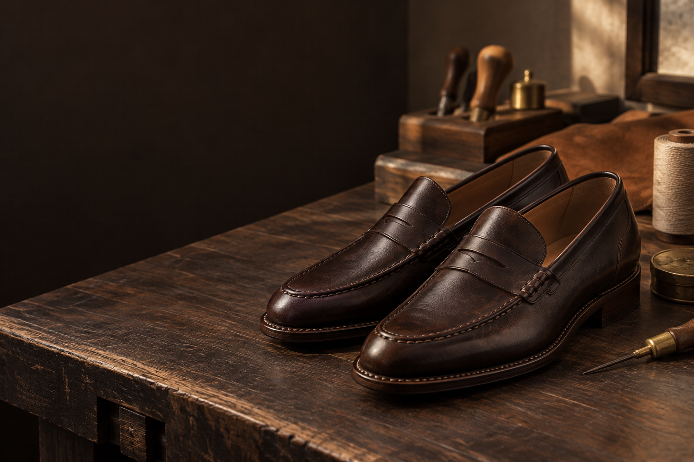

L’atelier
Les souliers réalisés par l’atelier sont cousus à Cotonou. Une paire sur mesure demande 15 jours d’atelier. Une retouche est offerte et la semelle peut être ressemelée.
Composer une paire →About us · Cotonou, Bénin
Ce que Yem’s sait faire, l’atelier le fabrique. Ce qu’il ne fabrique pas, la maison le choisit et le contrôle. L’origine est indiquée pour chaque pièce.
Découvrir les produits
Visuel de campagne · pas une photo documentaire de l’atelierNotre travail
Nous ne fabriquons pas tout ce que nous vendons. Nous distinguons l’atelier de la sélection, et nous disons clairement d’où vient chaque pièce.
Les souliers réalisés par l’atelier sont cousus à Cotonou. Une paire sur mesure demande 15 jours d’atelier. Une retouche est offerte et la semelle peut être ressemelée.
Composer une paire →Ces pièces ne sont pas fabriquées par Yem’s. La maison les choisit, les contrôle et précise les garanties qui s’appliquent. Elles sont échangeables pendant un an selon les conditions du site.
Voir la sélection →Nos engagements
Notre adresse
Nous travaillons depuis Cotonou et accompagnons nos clients au Bénin et en Côte d’Ivoire. Pour une question de pointure, de délai ou de modèle, l’équipe répond directement.
Nous vous aidons à choisir un modèle, une pointure ou à composer une paire sur mesure.
Contacter Yem’s